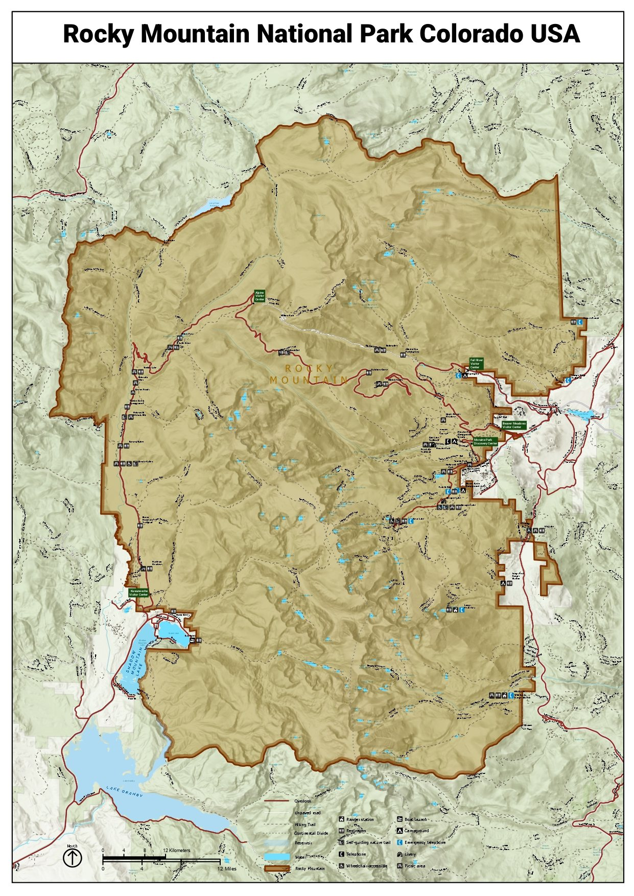

Cartography & Thematic Mapping
U.S. National Park Service Map Redesign
Replicated and improved an NPS park map, refining the colour scheme, symbology and labelling for a clearer, more usable map.
- Location
- Rocky Mountain National Park, USA
- Year
- 2025
- Client
- Upwork client
- Tools
- ArcGIS Pro, NPS open data


Approach
- NPS open data
- Rebuild base map in ArcGIS Pro
- Colour, symbol and label redesign
- Report
Result
Redesigned map plus a report on cartographic improvements for the next generation of NPS maps.